Over Cattery Viola
Ons verhaal
Cattery Viola is lid van Neoncat.
Met liefde en zorg fokken wij Britse korthaar-kittens in Maastricht.
[zelf invullen: eigen verhaal: sinds wanneer]
Cattery Viola is een kleine, particuliere fokker in Maastricht (Limburg), volledig gericht op de Britse korthaar.
Waarom de Britse korthaar
We kozen voor dit ras vanwege het rustige, liefdevolle karakter en de prachtige, dichte vacht. Juist omdat we klein zijn, kunnen we elk kitten persoonlijke aandacht geven.
Zo groeien onze kittens op
Onze kittens groeien op in een liefdevolle thuisomgeving. Daardoor zijn ze lief, speels, sociaal en nieuwsgierig. Ze gaan mee naar huis vanaf 12 weken: ontwormd, ontvlooid, recent door de dierenarts gecontroleerd, gevaccineerd, gechipt, zindelijk, gesocialiseerd en met stamboom.
We vinden het belangrijk dat een kitten op de juiste plek terechtkomt. Daarom nemen we de tijd om je te leren kennen en beantwoorden we graag al je vragen.
De ouders
- Moeder: Bella – Seal Silver Tipped Point; haar moeder is International Champion.
- Vader: Rudolph – lilac; kampioen op een internationale kattenshow.
Onze kittens hebben internationale stambomen met een kampioenenlijn. Beide ouders zijn getest op HCM/PKD en FIV/FeLV.
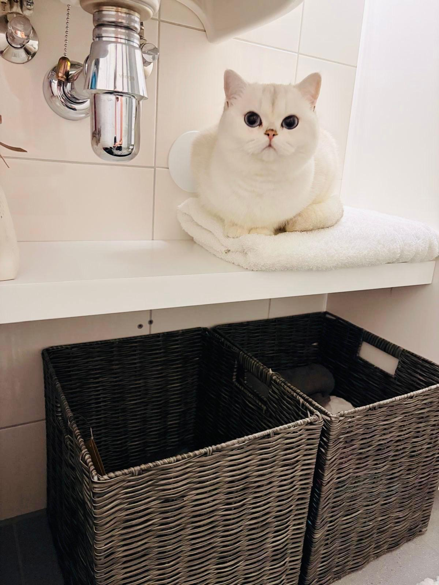
Foto’s uit onze cattery
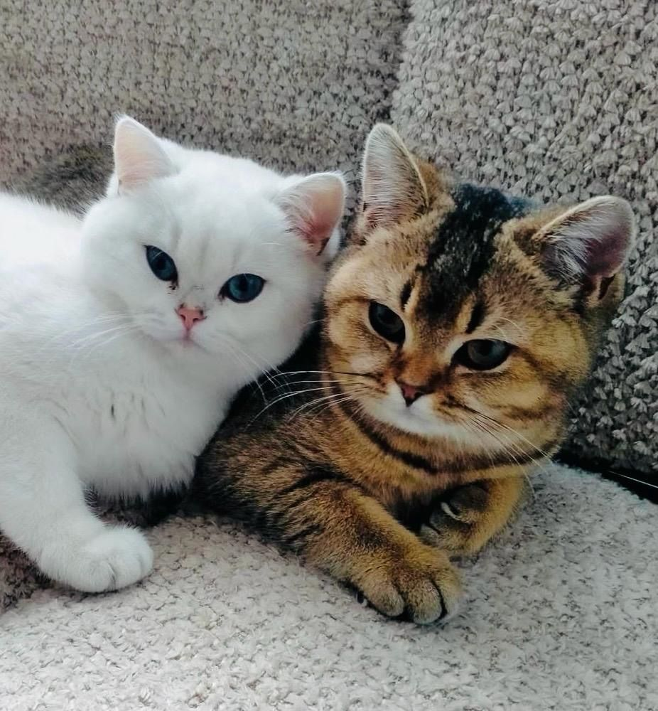
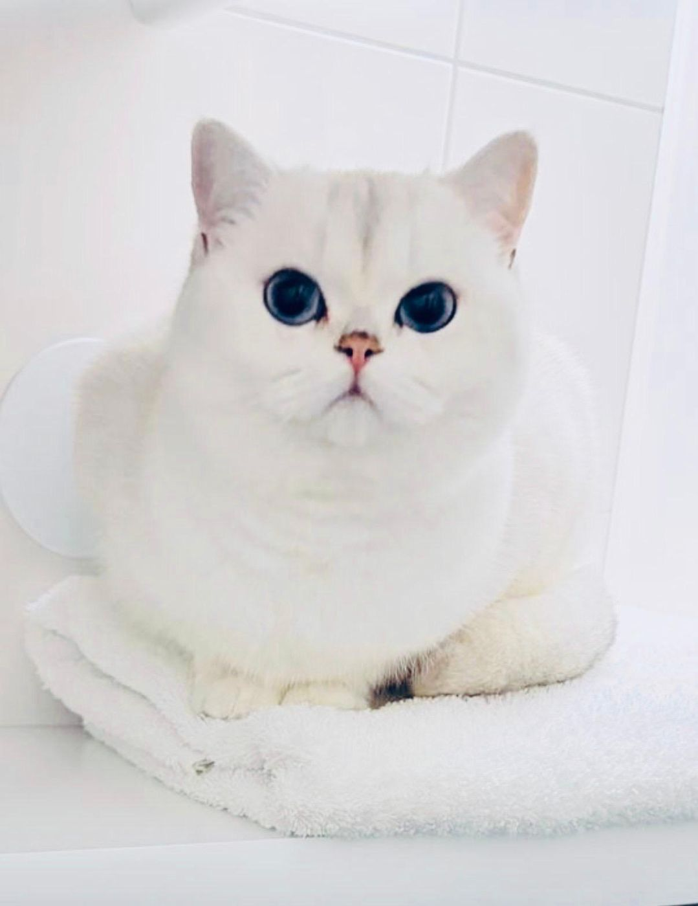
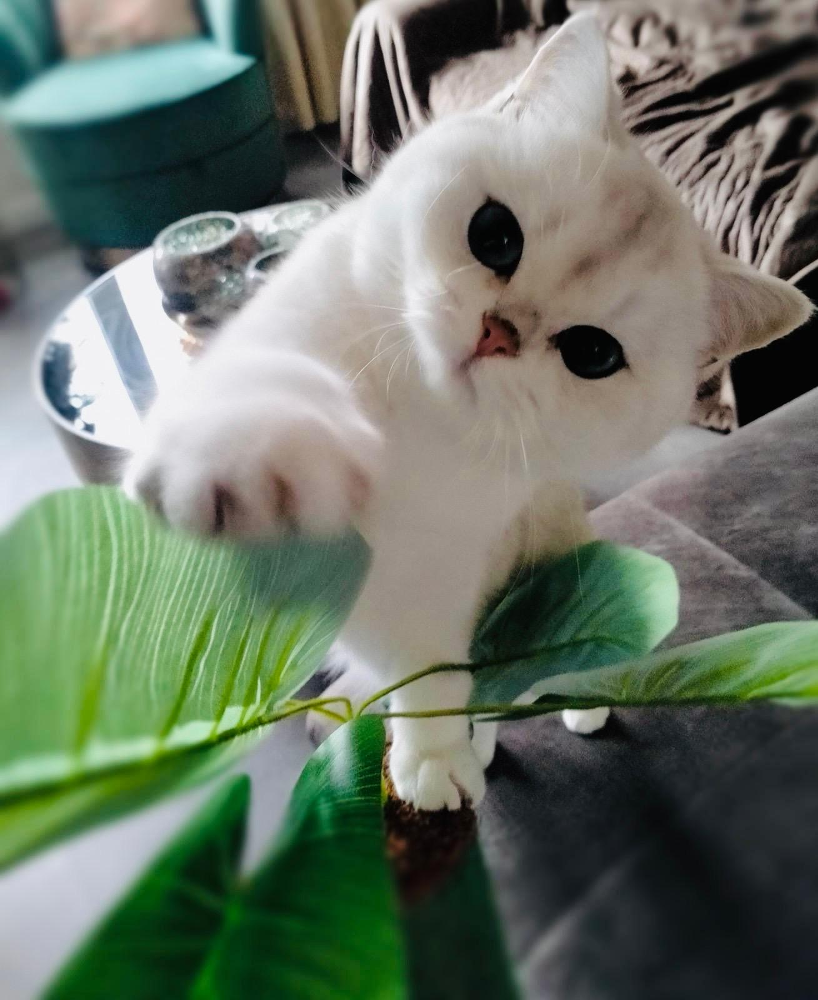
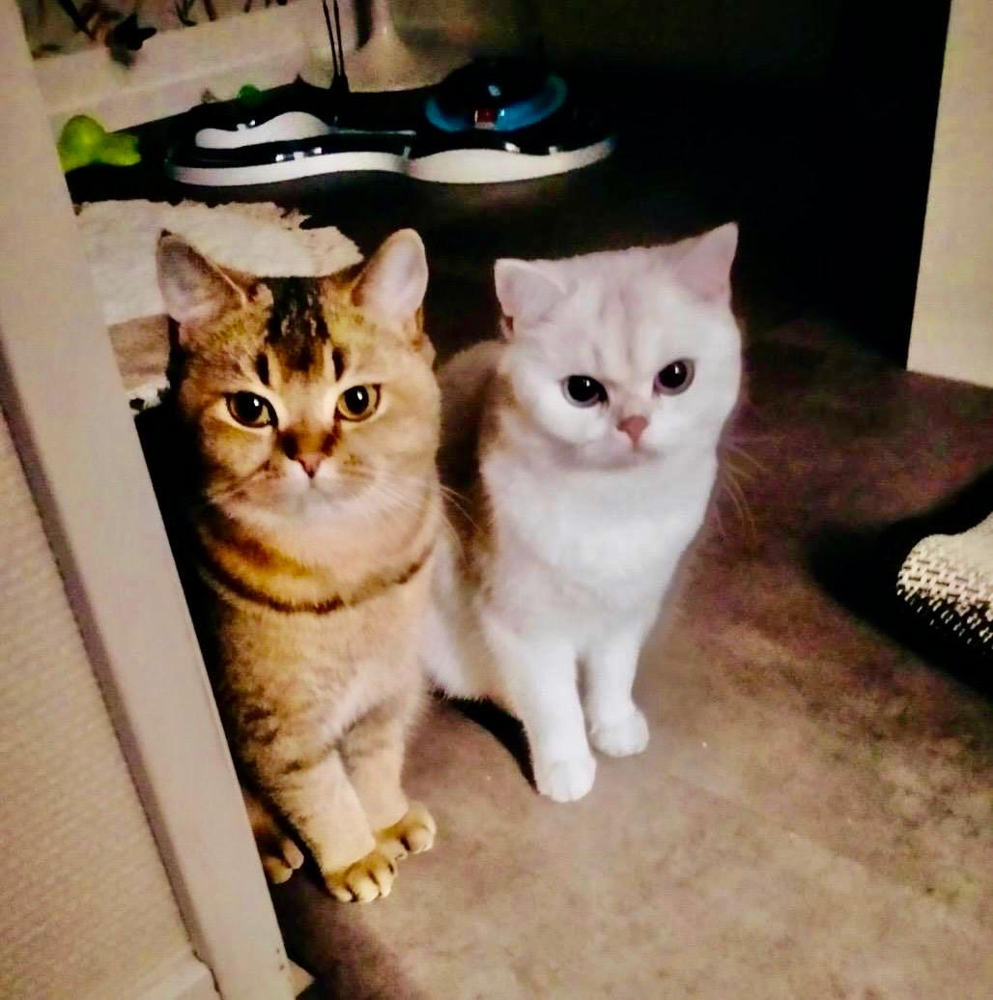
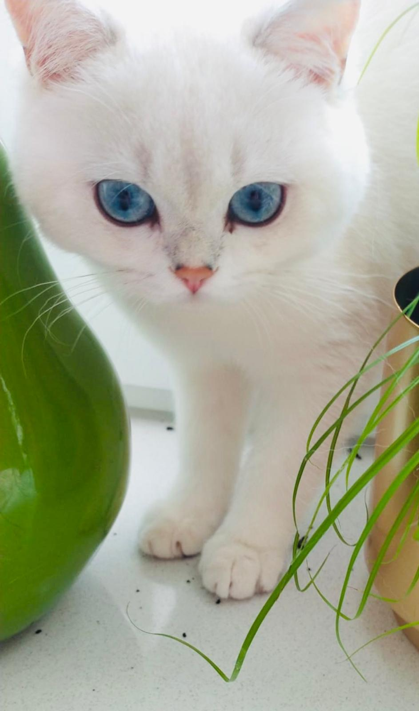
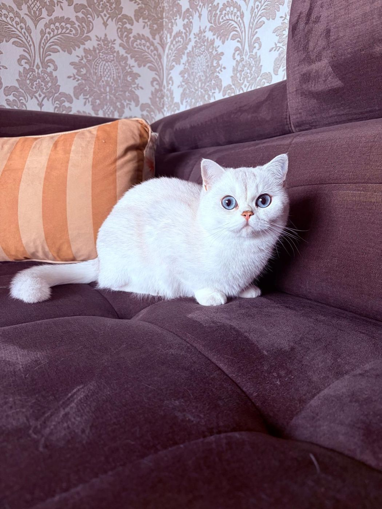
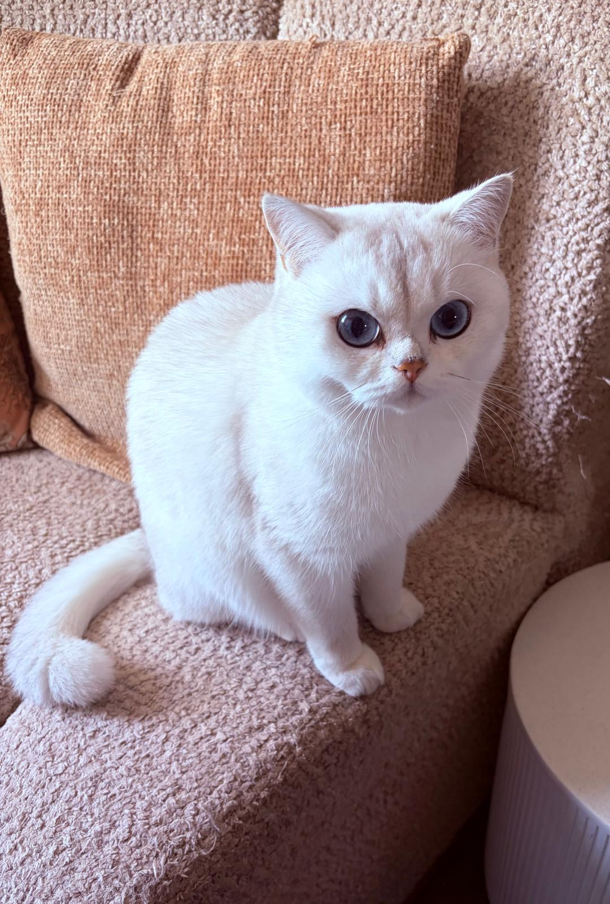
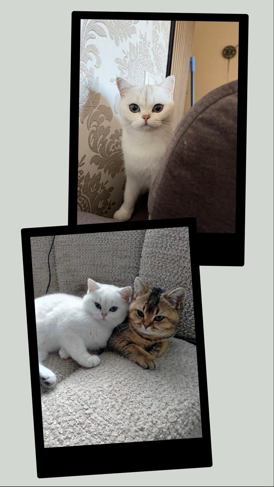
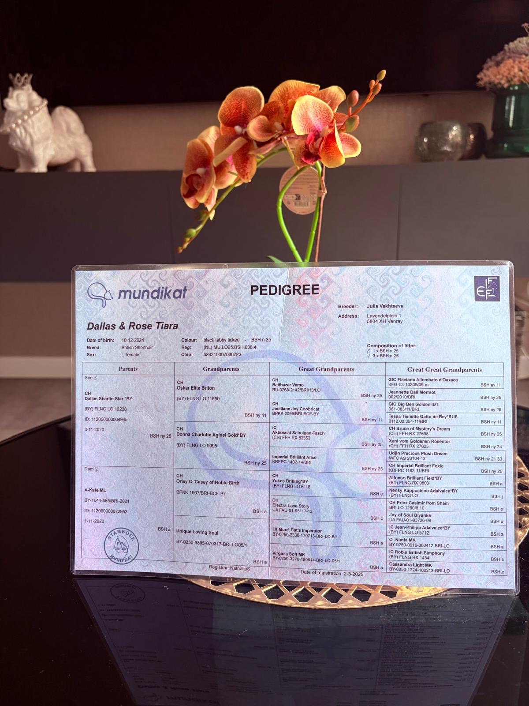
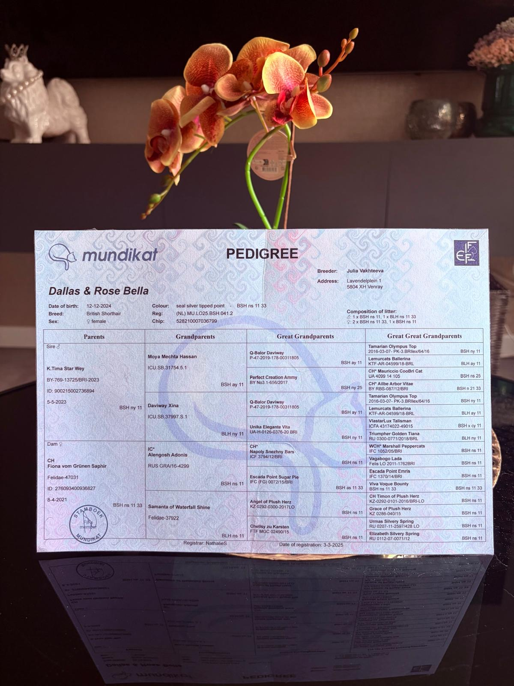